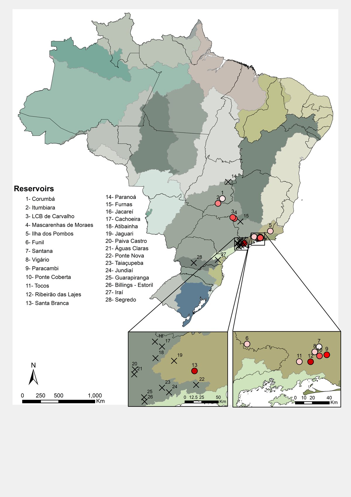
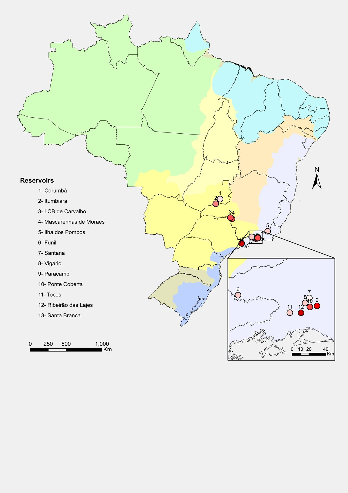

Location maps: reservoirs across the country and an Amazonian lake
Maps made on demand for two aquatic ecology studies, from the ecoregion and basin views to the detail of the sampling points.
- Deliverable
- On-demand location maps
- Period
- 2018
- My role
- Cartography: base, insets, symbols and layout
- Tools
- ArcMap · Adobe Illustrator

Freshwater ecoregions (FEOW)
River basins
Reservoirs
Amazon
What you are seeing
On the left, 28 reservoirs over freshwater ecoregions; on the right, 13 of them over river basins. The insets zoom into the south-east, where points overlap at the national scale.
Two scales in one layout: the position in Amazonas and in Brazil, and Lake Puruzinho, near Humaitá, with the ten sampling points, E01 to E10, down to the Madeira River.
28reservoirs located on the ecoregion map
10sampling points along Lake Puruzinho
2scales combined in each layout, from country to point
The brief
Two parallel aquatic ecology projects needed clear location maps: dozens of reservoirs spread across the country, with dense clusters in the south-east, and a series of sampling points along a narrow lake in the Amazon.
The solution
- Numbered reservoirs, listed in the legend, over freshwater ecoregions and over river basins.
- Insets where points overlap at the national scale.
- For Lake Puruzinho, a locator map of Amazonas and Brazil linked to the detail of the lake, with labelled points and a scale bar.
- Base and symbols in ArcMap, with the layout finished in Illustrator.